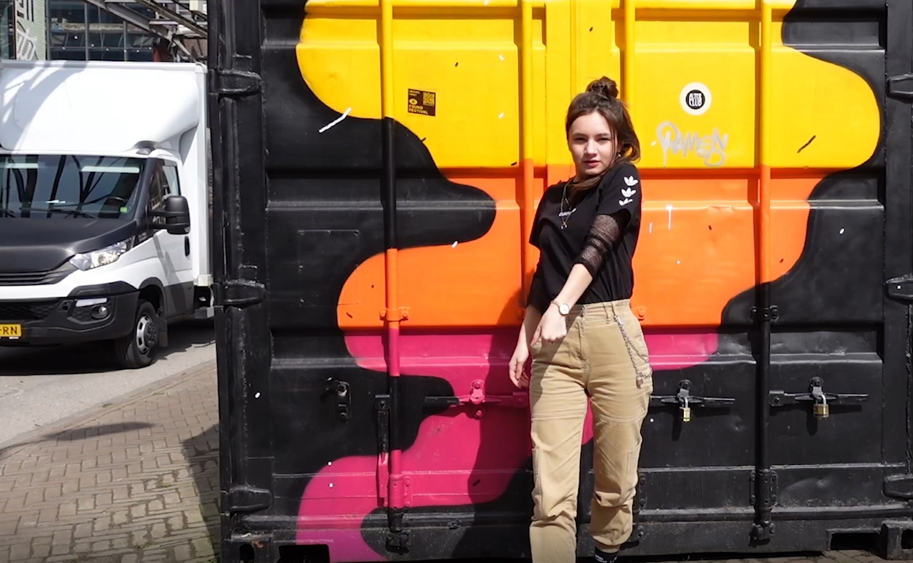

Design
Ruby Mus
Voor semester 2 moesten wij een opdrachtgever uitkiezen en verschillende sprint opleveringen maken. Daarbij koos ik voor de opdrachtgeefster Myrthe Robijns. Zij is een beginnend artiest die als Ruby Mus met haar muziek jong volwassen wil laten begrijpen dat het goed is om met jezelf in de knoei te zitten. Dit laat ze ook terug horen in haar muziek. Ze vind rood een mooie kleur en houd van designs waarbij je 2 keer goed moet kijken om erachter te komen wat het nou daadwerkelijk is. Bepaalde effecten zoals neon en glitch vind ze erg interessant.
Met ons groepje hebben meerdere malen contact met haar opgenomen om er zo goed achter te komen wat ze wilt en hoe ze dat voor haar ziet. Daarbij kwamen wij tot de conclusie dat we een brandbook voor haar wilden maken samen met een website. Dit hebben wij onderzocht in een research document. Zo kwamen wij er dus achter dat ze geen Billie Eilish vibes wilt uitstralen en dat ze ook een passie heeft voor dans. Met allemaal mee te hebben genomen zijn
wij aan de slag gegaan.
brandbook
Wat heb ik gemaakt?
De media verkenning samen met de brandbook heeft ons groepje Azeroth 2 gemaakt. Hierbij heb voor de cover gezorgd. De cover is ook gebruikt bij de brandbook. Voor de website hadden wij verschillende dingen nodig zoals een wireframe maar ook content voor op de pagina. Voor de content hebben wij een photoshoot gedaan samen met Ruby Mus. Daarbij hebben we verschillende foto’s gemaakt. Deze hebben we onder elkaar verdeeld om te bewerken in photoshop. Omdat ik al voorkennis had met Adobe heb ik mijn klasgenoten geholpen met maskeren en het uitleggen met bepaalde tools.
Tijdens de fotoshoot kwam ik er achter dat we helemaal gedaan hebben met dans. Ik heb vervolgens gevraagd aan Myrthe of ze kan freestylen (dansen zonder choreografie). Hiervoor heb we een leuke plek gevonden en is Myrthe gaan dansen. Mijn eerste intentie was er een simpele boomerang er van te maken maar later op heb ik dit geanimeerd met neon effecten. Daar heb ik het niet bij gelaten en ik heb er een film filter eroverheen gezet. Hier onder zie je de een afbeelding hoe het filmpje er eerder uitzag. Eind resultaat zie je op de website van Ruby.

Om dit resultaat te hebben behaald heb ik verschillende video's opgezocht onderanderen de glow effect.
Ook heb ik de bus weggehaald met behulp van Content-Aware Fill. Uiteindelijk heb ik er nog een touch aangegeven met Lumetri Colors.


Wat heb ik geleerd?
Ik heb geleerd om op professionele wijze een fotoshoot te doen maar ook te kijken naar de wensen van de opdrachtgever. Ik was vooral gewend om dingen voor mezelf te maken en dit is vooral vaak wat ik leuk vind. Nu moest wensen en verwachtingen van iemand anders verwerkt worden. Op het begin was het best lastig om daarmee ideeën te bedenken maar later leerde ik hoe ik ermee om moet gaan. Een grote groei is er in after effects ontstaan omdat ik meerdere elementen nooit eerder had gebruikt. Ook vond ik het best spannend om een fotoshoot te doen omdat het mijn eerste keer was.
Wat kon beter?
Ons groepje was erg gezellig en we werkte goed aan alle opdrachten. Wat iets beter kon waren de planningen. Vaak was het niet echt duidelijk wanneer iets af moest zijn ondanks dat we een trello gebruikten.
Wat zou ik de volgende keer anders doen?
Ik zou volgende keer sneller te werk gaan met de website zodat we meer testen kunnen draaien om te kijken voor bugs. Dit hebben wij wel gedaan maar er mocht er iets meer aandacht aan gegeven.
Media technieken
Voor media technieken heb ik verschillende dingen gemaakt zoals posters, een filmposter, een voorstel video, insta stories, een infographic en een dataset. Ook zie je verschillende versies doordat ik meerdere keren feedback heb ontvangen.
Wat heb ik geleerd?
De opdrachten waren echt de basis van Adobe. Omdat de opdrachten redelijk simpel waren heb ik me meer gefocust op mezelf uitdagen. Dit heb ik vooral gedaan bij de posters. Meerdere posters zijn met de hand getekend. En ik heb ook gekeken om iedere poster zo uniek mogelijk te maken. Dit is ook zo uitgekomen bij Adobe After Effects. Ik heb verschillende effecten geleerd die ik heb gebruikt voor mijn insta reels. Ik heb een 3d effect tot aan het clonen van mezelf.
Wat kon beter?
Bij after effects zijn de chroma key en camera tracking niet toegepast. Dit kwam omdat after effects het gewoon niet toeliet. Tijdens het analyseren voor 3D tracking heeft hij meerdere malen aangegeven dat de footage niet goed is. Dit kon ik helaas voor de deadline niet werkend krijgen. De chroma key werkte heel slecht in after effects. Bij premiere pro is dit wel gelukt omdat je de chroma filter meerdere keren over een clip kan zetten. Dit is overigens niet mogelijk in after effects waardoor er niks van de achtergrond wegviel. Nou ben ik me ervan bewust dat ik natuurlijk gewoon gebruik had kunnen maken van het fotolab.
Doordat beide effecten niet werkte en het overigens maar 5 minuten had gekost. Nam ik het initiatief om wat meer uit te kast te halen bij de Insta Stories. Ik heb een 3D film effect toegepast door het frame per frame maskeren van mezelf. Als ik hierop terugkijk heb ik super veel dingen hierdoor geleerd en ik heb ook zeker geen spijt dat het zo gelopen is. Hierdoor ben ik er achter gekomen dat ik fotografie en videobewerking super leuk vind. Toch vind ik het jammer dat de docent mijn insteek niet kan inzien en mij door twee effecten de media verkenning heeft laten falen. Daarbij ben ik er ook van overtuigd dat de insta stories echt wel media waardig waren. Als alles had gewerkt had ik een super saai filmpje waarbij ik loop en een tekst op de muur zat. Nu heb ik een heel goed en gaaf filmpje waarbij ik veel verschillende effecten heb gebruikt en echt veel heb kunnen leren maar wat helaas niet 100% aansluit op de opdracht.
Daarom geef ik hem toch aan bij Professional Identity. Echter had ik wel meer feedback mogen vragen bij docenten zodat wat beter aan de opdracht had kunnen voldoen.
Wat zou ik de volgende keer anders doen?
Ik streef er de volgende keer naar om mij beter aan de opdracht te houden en tegelijk mijn eigen touch eraan te geven. Dit ga ik ook bereiken door meer feedback te vragen en wanneer er technische problemen zijn dit zo snel mogelijk aan te geven bij de docenten. Dit heb ik overigens wel gedaan bij Sprint X.
Glow Week
Glow week is een speciale week waarin wij van een externe opdrachtgever een challenge krijgen die wij moeten uitwerken in een week tijd. De opdracht voor ons om met gebruik van licht, gevoel en emoties te creëren richting de gebruiker. Daar moesten wij een video van 1 minuut van maken waarin wij ons idee/prototype presenteren. Voor deze opdracht hebben wij in groepjes van 2 gewerkt. Tessa van de Langenberg was mijn partner voor deze week.
We hadden als idee om meer interactie te hebben tussen licht en gebruiker. Wij wilde dat de emoties van de gebruiker werden weerspiegeld in licht. Tessa kwam met het uiteindelijke idee om AI face tracking te gebruiken van een persoon. Deze ideeën hebben we gecombineerd en zo kwam Miranda tot leven.
Tijdens het presenteren van onze 1 minuut durende video was de opdrachtgever onder de indruk van ons idee hiervoor hebben wij een eervolle erkenning gekregen.
Mirinda Video

Wat heb ik geleerd?
Tijdens het maken van een 1 minuut durende skit heb ik vooral meer geleerd over het editen in Première Pro. Hier had ik al wat kennis van opgebouwd maar ik merkte al snel dat het veel vlotter ging.
Wat kon beter?
Door dat we maar 3 dagen voor deze opdracht hadden, hadden we vooral stress om iets goeds neer te kunnen zetten. De opdracht zelf was super leuk omdat je creatief bezig was. Als het wat langer was geweest had de productie er professioneler uit gezien.
Wat zou ik de volgende keer anders doen?
Na naar meerdere ideeën te hebben gekeken zag ik al snel dat ons idee geen toegevoegde waarde heeft. Hiermee bedoel ik dat ons idee mensen niet verder helpt of verbeterd. Ons idee is meer gericht op vermaak.
Sprint X
Sprint x is een ondernemende opdracht waarbij iedere leerling een eigen project bedenkt. daar hoort research bij. Ook maak je op het einde van je product een video van 1 minuut waarbij je presenteert wat je gemaakt hebt. Mijn idee is een videoclip te maken over mezelf op een professionele wijze. De docent heeft gezegd dat mijn idee overeenkomt met een showreel. Hiervoor heb ik verschillende video’s bekeken en opgezocht wat een showreel inhoud.
In het bestand vind je de research die ik heb gedaan samen met het script
Sprint X showreel
Wat heb ik geleerd?
Ik heb geleerd hoe ik met bepaalde situaties om moet gaan. denk dan aan tijdnood en stress. Dit leer je wel achteraf en niet tijdens het proces. Ook heb ik geleerd om niet een al te strikt schema te maken zodat er altijd ruimte is voor speling. Ik heb geleerd hoe je research doet in de APA manier en natuurlijk hoe een showreel in elkaar zit.
Wat kon beter?
Tijdens het documenteren van mijn research is mijn windows corrupt geraakt tijdens een windows update. Hierdoor raakte ik grotendeels mijn werk kwijt. Hiervan had ik nog een kopie in de cloud maar was helaas het verouderde bestand. Door de situatie raakte ik in tijdnood en is veel van mijn planning in de soep geraakt. Hierdoor heb ik geen feedback kunnen vragen aan de docent en is de showreel niet af. De showreel was bedoeld om langer dan 2 minuten te zijn en promoot te worden op mijn portfolio. Nu als heb ik als alternatief er een teaser voor de showreel van gemaakt. Om toch aan de eisen te kunnen voldoen.
Wat zou ik de volgende keer anders doen?
Volgende keer zou ik niet zo een strak schema maken en ervoor zorgen dat er ruimte is voor speling mocht er iets fouts gaan. Ook wil ik een harddisk aanschaffen om daarop al mijn gemaakte werk extra op te slaan als back-up.
^